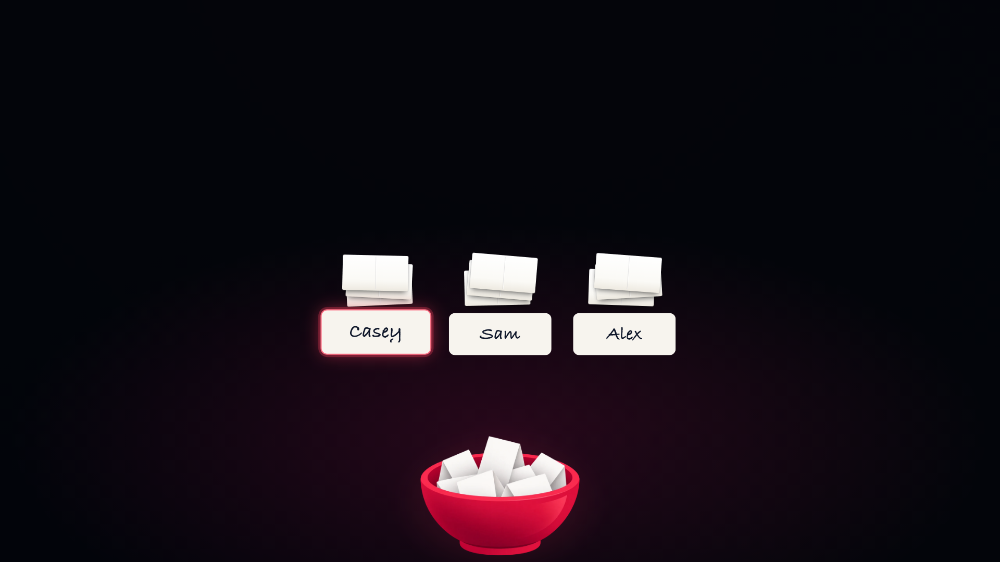
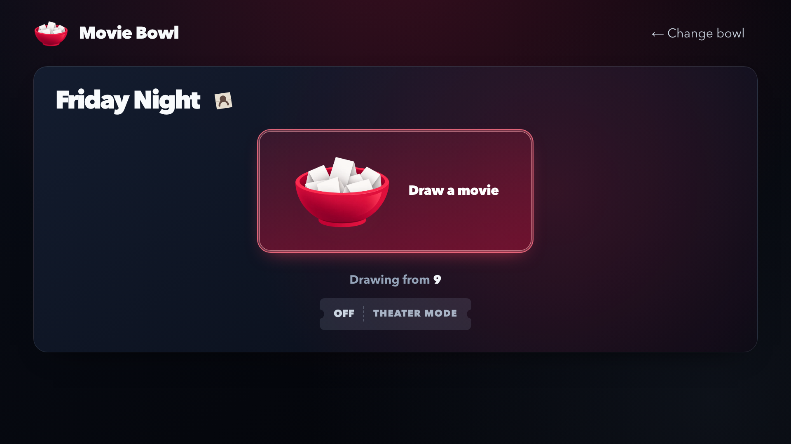
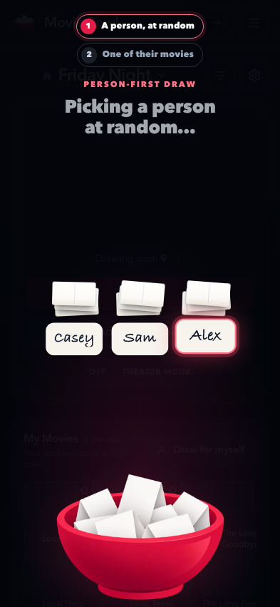
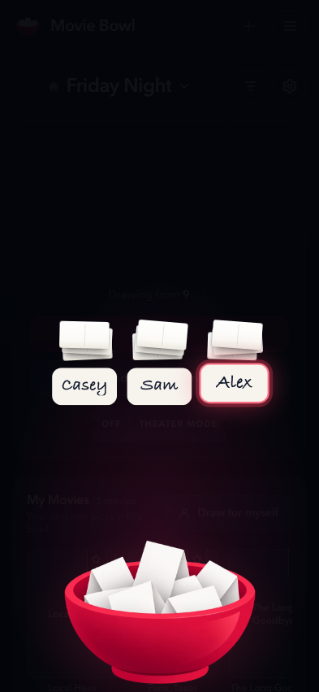

Approved · September 30, 2026
Let the slips show the draw
Real app captures with fabricated accounts, at 1920 × 1080 for TV and 393 × 851 for phone. The reveal is held at the same moment in both views.
The reveal, without the top copy
Remove the step labels, method sentence and running commentary. Keep the people’s names on their slips and preserve the animation and its framing.

The same scene on TV. Use the buttons to compare.
A loose slip beside the bowl’s name
The current outlined rectangle and person can read as a profile button. The proposal uses a slightly tilted paper silhouette, with a fold and the same method mark printed on it.

The mark remains context about the bowl, with no remote action.
The same reveal cleanup on a phone

Current
Proposed